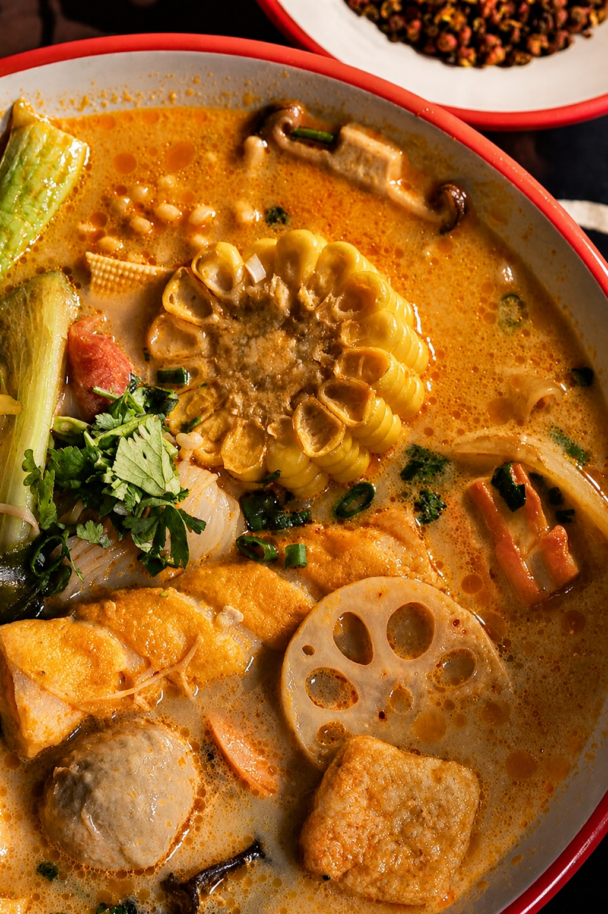
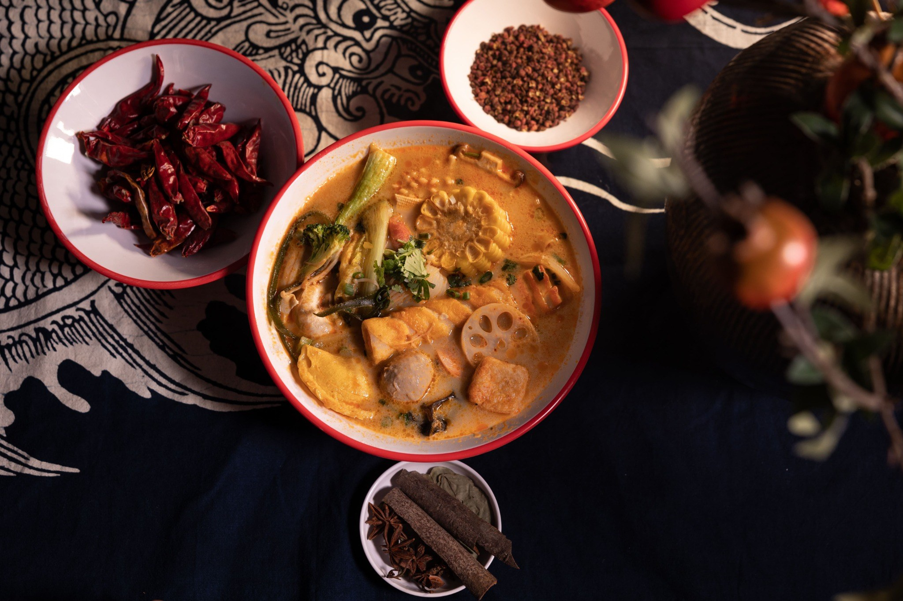
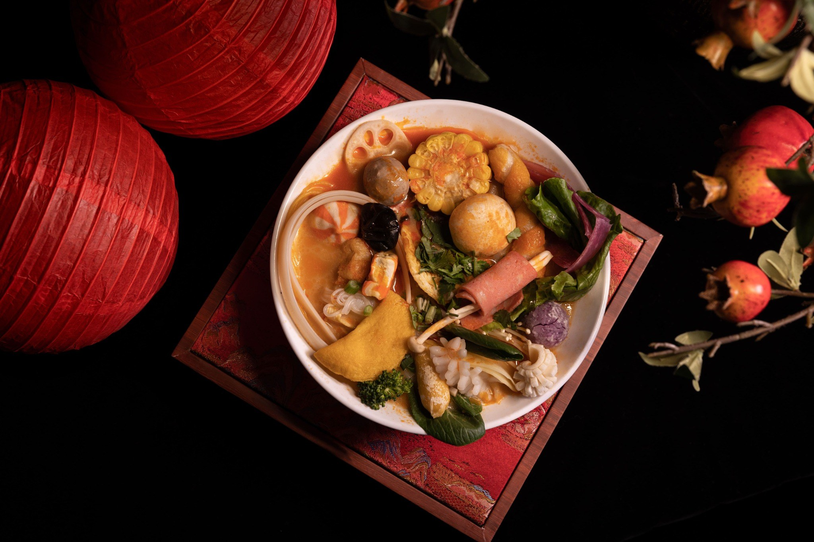
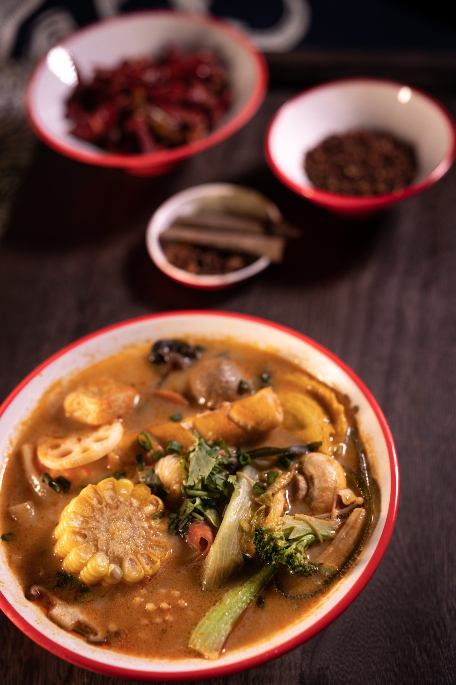
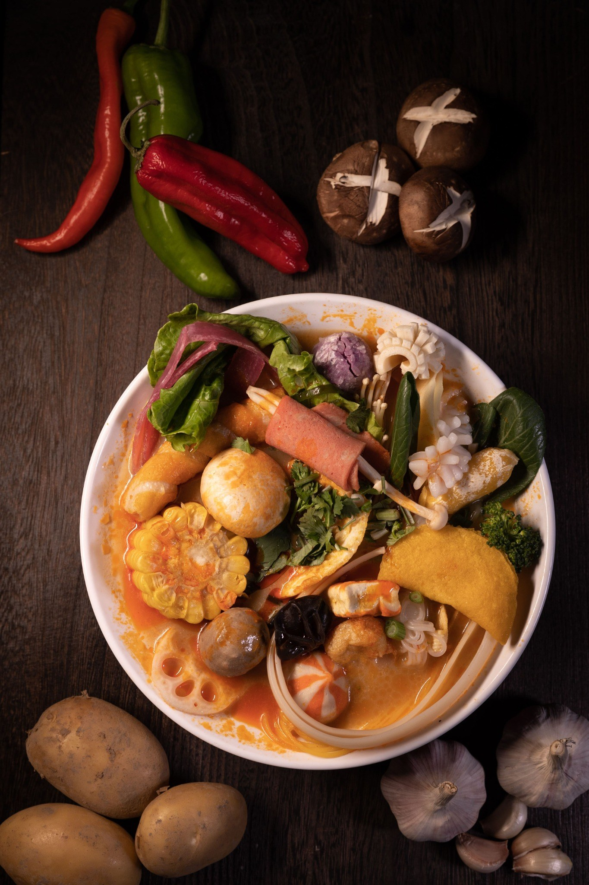

マーラースープ
高級薬膳と濃厚牛骨スープの旨味が痺れます
小辛・中辛・大辛・激辛の中から辛さを選べます。代謝アップや脂肪燃焼に効果的です。
Order
4種類のスープ + 辛さ4段階から選びます。
ボールとトングを持って、冷蔵棚からお好きな具材をピックアップ。
レジにてお会計後、席にてお待ちください。できたてをお持ちいたします。
Gallery




FAQ
はい、選べます。
辛さは、小辛・中辛・大辛・激辛の4段階から選べるので、お好みに合わせて調整できます。
はい、大丈夫です。
当店では唐辛子を使わないスープもご用意しています。トマトスープ・松茸スープ・薬膳スープから選ぶことができます。
セルフ形式で自由に選べます。
店内の具材コーナーから、お好きな野菜・お肉・麺などをトレーに取っていただきます。スタッフが計量し、スープと一緒に調理いたします。
ヘルシーな具材を選ぶことでダイエット中でも大丈夫です。
春雨自体は低カロリーですが、入れる具材やスープの油分によって変わります。野菜やきのこを中心にすれば500kcal前後に抑えられます。「カプサイシン」や「薬膳スパイス」の脂肪燃焼効果も期待できます。